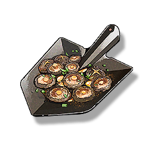

Iron Shovel Edodes
Supplies

Increases the Crit. Rate of all Resonators in the team by 15% for 30 minutes, only effective for the player's Character in multiplayer games.
A special dish that originated in the Huanglong army. Huanglong soldiers would use an engineer's shovel as an iron plate, and after heating, they would grill and enjoy the ingredients. This way of eating was later passed back to the home by the retired soldiers and became a famous dish.